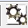
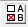

Analysis Menu
The Analysis Menu in the Analysis GUI provides access to various analysis methods within the GUI. Some of these methods are "one-block" methods (meaning they operate on only the X data) and others are "two-block" methods (meaning they require both an X and a Y data be loaded). Most methods also create a "model" when they are executed.
In all cases, once the analysis method has been selected and appropriate data loaded, a model can be built by clicking on the Calibrate button in the toolbar (the Gears)  or by clicking on the "Model" button in the Status Panel.
For many methods, particular method options can be selected or modified using the Options button: 
The following methods are available in most versions of Solo and PLS_Toolbox (some special versions of the software may have fewer or additional methods). The methods are listed here, divided into groups based on their typical application:
Exploratory and Cluster Analysis Methods (Decomposition/Cluster)
These methods are one-block methods and require only the X block to operate. The Y block is not used in these methods.
- PCA Principal Component Analysis: used for exploratory data analysis and Multivariate Statistical Process Control as well as general pattern recognition and fault detection applications. See also: pca
- Purity: Interactive mixture analysis method used to resolve mixtures of unknown responses and provide more physically-interpretable results than PCA. Most useful on data where some samples and/or variables represent "pure" responses or components (non-mixtures). Goal is to provide more physically-interpretable results than PCA. See also: purity
- MCR Multivariate Curve Resolution: Automated mixture analysis method used to resolve mixtures of unknown responses and provide more physically-interpretable results than PCA. Uses an algorithm with successive approximations which can take some time to complete and has some ambiguity, but can operate with complicated mixtures of unknown components. See also: mcr
- MPCA Multiway Principal Component Analysis: used for exploratory analysis of 3-way batch data in which the first mode is usually time, the second mode is variables, and the third mode is sample (e.g. batch number, or wafer number, in the case of semiconductor field). MPCA identifies trends both between variables, but also changes in variables through time, known as trajectory. Models can be more complicated to interpret than PCA models and may be more sensitive to minor variations, but can provide improved selectivity in some cases. See also: mpca
- Batch Maturity Batch Maturity is a PCA decomposition method which defines confidence limits which are dependent on how far through a "batch" (time-based) process the a new measurement is determined to be. It involves both a standard PCA decomposition model and a second regression model (usually PLS) which attempts to predict how close to completion a new sample is (a.k.a. the "batch maturity"). Given the maturity, a subset of calibration samples are used to determine the expected scores limits. See also batchmaturity
- Cluster : Performs a variety of unsupervised cluster analysis methods. Used to look for similarities between samples with resutls displayed as a dendrogram with similar samples grouped together and attached by short "branches". A number of similarity metrics are available with different sensitivities. For details, see: cluster
Quantitative Analysis Methods (Regression)
These methods are used in quantitative problems where one needs to determine the amount of a component, property, or other value based on the measured X-block responses. They are all two-block methods and most require both an X and a Y block to operate.
- PLS Partial Least Squares: Factor-based regression method using an inverse regression equation. PLS identifies latent variables (factors or patterns) in the X block which can be used to predict the column(s) of the Y block. Inverse methods are often used when not all underlying sources of variation are known and quantified. See also: pls
- PCR Principal Component Regression: Inverse regression method closely related to PLS with similar goals. PCR may be less sensitive to random and systematic error in the Y block but more sensitive to systematic error in the X block. See also: pcr
- LWR Locally Weighted Regression: Inverse regression method often used with non-linear systems. LWR uses PCA to automatically select the calibration samples most similar to a new (unknown) sample and calculates a PLS or PCR model from only those samples (this is called the "local" model). User must select the number of samples to include in the local model and whether the model should be a PLS, PCR, or Global PCR model. Global PCR uses the scores from the original PCA. The other two are standard PLS or PCR models which can use the same number of latent variables as the global model or a user-selected number. See also: lwr
- SVM-R Support Vector Machine [Regression]: Sometimes called SVR (Support Vector Regression), this is a non-linear regression method which can be considered a hybrid of MLR and LWR. The calibration step selects calibration samples (called "support vectors") which are deemed the most critical to defining the regression relationship. These samples are used with [usually] non-linear weighting terms to define a locally-weighted prediction for new samples. Unlike the other regression methods, SVM is intrinsically non-linear and can better approximate non-linear responses, however, its predictions can also be more chaotic as a result. See also: svm
- MLR Multiple Linear Regression: Non-factor based inverse regression method. MLR uses raw variable responses in X to predict Y. This method requires that all columns of X be unique (not highly correlated) and may be highly unstable or unusable with many variables. Models do not provide quality of fit statistics. See also: mlr
- CLS Classical Least Squares: Factor-based classical regression method based on a simple linearly additive model. CLS works well when all responses in a system are known or can be determined experimentally. Often works well when several underlying sources of variance exist and their quantity needs to be determined. Unlike the other methods, CLS can operate on an X block alone. If no Y block is loaded, CLS assumes that the samples in the X block are "pure component responses" (i.e. each row of the X block represents what an individual component of the system looks like when measured on its own.) See also: cls
- XGB Gradient Boosted Decision Tree Regression: The gradient boosted tree method additively combines an ensemble of decision trees to produce a better predictor. XGB can be used as a linear or non-linear method and can include regularization to reduce overfitting. Computational performance scales much better than SVM for large numbers of samples. See also: xgb
Classification Methods
These methods are used to identify a sample as belonging to one or more groups of previously-classified samples. The samples in the calibration set must be assigned to class(es). These class assignments are then used to help identify the class for an unknown sample. They are mostly one-block methods which operate on a single X block with the calibration samples' "class" field assigned to indicate the class membership (For information on assigning classes to the X-block, see Assigning Sample Classes). The scores predicted by these models include the class predictions as described in Sample Classification Predictions.
- KNN K-Nearest Neighbors: A classification method which assigns an unknown sample to a class by identifying the "k" closest samples in the calibration set and tallying a "vote" of the classes of these samples. The class which receives the highest vote count is determined to be the class of the unknown. See also: knn
- PLSDA Partial Least Squares Discriminant Analysis: A classification method which identifies the differences between two or more classes by identifying what is different between the classes. PLSDA is a factor-based method very similar to Linear Discriminant Analysis (LDA) but does not suffer from problems with collinear (highly related) variables. See also: plsda
- SVMDA Support Vector Machine Discriminant Analysis: Sometimes called SVC (Support Vector Classification), this is a non-linear classification method which can be considered a variant of KNN. The calibration step selects calibration samples (called "support vectors") which are deemed the most critical to defining the class boundries. These samples are used with [usually] non-linear weighting terms to define a locally-weighted prediction for new samples. As opposed to PLSDA and KNN, SVM is intrinsically non-linear and can better approximate non-linear responses, but can also be more chaotic as a result. See also: svmda
- SIMCA Soft Independent Modeling of/by Class Analogy: A classification method in which a PCA model is created for each class in the calibration data. Unknown samples are then projected into each PCA model and classified as in or not in each class based on whether the sample falls "inside" each PCA model. See also: simca
- XGBDA Gradient Boosted Decision Tree Discriminant Analysis: The gradient boosted tree method additively combines an ensemble of decision trees to produce a better classifier. XGBDA can be used as a linear or non-linear method and can include regularization to reduce overfitting. Computational performance scales much better than SVMDA for large numbers of samples. See also: xgbda
Statistical Methods
These methods are usually used to analyze data created through an experimental design to determine the effect of the controlled factors of the design. They are similar to Decomposition methods except they require additional information about the design to perform the analysis.
- ASCA Analysis of Variance (ANOVA) Simultaneous Component Analysis: a method to determine which factors within a fixed effects experimental design are significant relative to the residual error. ASCA permits an ANOVA-like analysis even when there are many more variables than samples and interprets the significance of all variables together in PCA model loadings. See also: asca
- MLSCA Multi-level Simultaneous Component Analysis: a which analyzes the variability in datasets from designed experiments with nested factors. It separates variability into that associated with each factor and the residuals, estimating the contribution of each factor to total sum of squares. A PCA model is built for each factor showing the scores and loadings for these effects. MLSCA also builds a PCA model on the residuals, or “within” variability. The “Within” variability is often the focus of the analysis. See also: mlsca
Multi-way Methods
Multi-way methods work on X-block data which has 3 or more dimensions ("modes"). Whereas other methods expect 2-way data "tables" where rows are samples and columns are variables, these methods allow for 2 or more modes of variables where each variable is also collected as a function of one or more other parameters (e.g. Excitation Emission Matrices (EEMs), sensory data, GC-MS).
- PARAFAC PARAllel FACtor analysis: Very similar to MCR, but can be applied to multi-way data (data with 3 or more dimensions) as well as typical 2-way data. Results for 2-way data are essentially the same as MCR, but results on multiway data can be very deterministic. PLS_Toolbox users, see also: parafac
- Multi-way PLS (NPLS) Multi-way Partial Least Squares: quantitative analysis method for use with multi-way X. PLS_Toolbox users, see also: npls